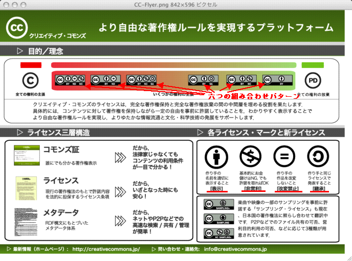
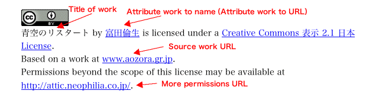
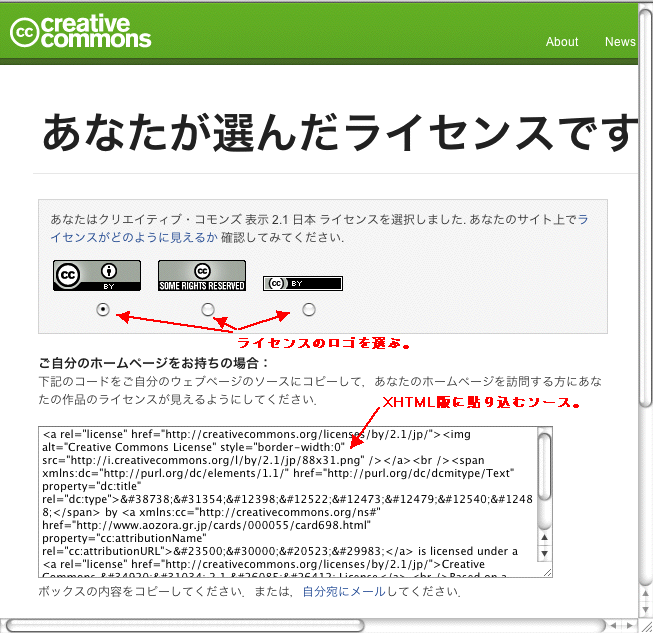

著作権「あり」の作品を青空文庫本体サーバーに収録するにあたってのクリエイティブ・コモンズの利用
2010年2月26日作成
2010年5月29日修正
富田倫生
青空文庫では、著作権「あり」の作品を登録する際は、ファイルを著作権者自らが用意するところに置いてもらい、図書カードからそこにリンクしてきた。
これにより、ファイルをインターネットで公開（公衆送信）しているのはあくまで著作権者であるという、著作権法の基本設定にそった形がとれた。
加えて、青空文庫丸ごとを収録したパッケージを作る際には、著作権「あり」は自動的に除外されるため、収録の可否を問い合わせる作業ステップを省くことができ、著作権者の意に添わない収録の可能性を排除できた。
だが、登録を望む著作権者の一部には、青空文庫本体への収録に対する求めがあった。
著作権「あり」は、丸ごとのパッケージにおさめないことで、作業量の削減やトラブルの可能性を排除するというのも、後ろ向きの解決策ではある。
誰かが著作権をもつ作品を、青空文庫が公衆送信し、複製することに、権利上の問題や懸念が生じない形がもしもとれるなら、本体収録にはファイルの安定的な公開や、広範な流布といったメリットがあるのだから、踏み切る価値がある。
そのために、青空文庫が自前の条項を定めて、その都度著作権者と契約を取り交わすことも考えられる。
だが、著作物利用の約束事として、すでに世界で広い認知を得ているクリエイティブ・コモンズ（以下CC）を活用すれば、単に青空文庫の枠内にとどまらず、そこから引き落とされた先もふくめた、より広い範囲をカバーする利用許諾を、容易に設定できる。
こうした観点から、CCの利用について検討する。
CCとは
著作権を保持しながら、利用に関する一定の自由を著作権者があらかじめ明示し、著作物の活用を促そうとする仕組みである。
「クリエイティブ・コモンズの理念」
CCのFAQを参照。
CCの構成
CCでは、以下の四つの条件を組み合わせて、利用の自由の範囲を設定する。
表示（Attribution）：著者、訳者など、作り手の名前を適切に表示すること。
非営利（Noncommercial）：基本的には営利目的は許さないが、許諾をとればその限りにはあらず。
改変禁止（No Derivative Works）：作り手の作品を改変しないこと。翻訳も、改変に含まれる。
継承（Share Alike）：翻案、翻訳などの二次的な著作物を作るなら、もとと同じ利用許諾で発表すること。
これらは、自由に選べるが、改変禁止と継承が組み合わされることはない。
改変禁止の付いた作品では、そもそも二次著作物を作ることができないからだ。

▲クリエイティブ・コモンズ・ジャパンによる図版を改変。
四つの条件の組み合わせパターンは、以下の六つある。
表示（CC BY）
表示-非営利（CC BY-NC）
表示-継承（CC BY-SA）
表示-非営利-継承（CC BY-NC-SA）
表示-改変禁止（CC BY-ND）
表示-非営利-改変禁止（CC BY-NC-ND）
著者名の表示条件は、必ず入る。それだけを求める場合は、表示を選ぶ。
著者名の表示と非営利を求める場合は、表示-非営利を選ぶ。
著者名の表示と非営利、改変禁止を求める場合は、表示-非営利-改変禁止を選ぶ。
六つのパターンのいずれが付いていても、作者名を表示することを条件として、その作品を「複製、頒布、展示、実演することが」できる。
加えて、改変禁止が付いていなければ、「二次的著作物を作成」できる。
CCの付け方
青空文庫は、テキスト版とXHTML版での登録を基本とする。
著作権ありについては、これまではファイル形式を自由に選んでもらっていた。けれど、本体収録を行なうのであれば、テキスト版とXHTML版は必ず用意した方がよいだろう。
ここでは、テキスト版とXHTML版にCCをつける想定で、話を進める。
CCは、「License Your Work」と名付けたページに、htmlに貼り込むライセンス表示用のソースを提供する仕組みを用意している。
上記ページの、グレーの枠囲みで許諾条件を選び、データを記入し、最後にページ下の「ライセンスを選ぶ」をクリックすると、切り替わったページのボックス内に、貼り込むべきソースが表示される。（記入項目の選び方や貼り方の詳細は、以下で説明する。）
一方、テキスト版に貼り込むライセンスに使えそうなひな形を、CCは用意してくれていない。
青空文庫で、準備しておくことが望まれる。
テキスト版のひな形
翻訳作品を青空文庫に登録してくださっている大久保ゆうさんは、かねてからファイルにCCライセンスを組み込んでこられた。
大久保さんの文言を参考に、必要最小限の要素にしぼったひな形を、以下に提案する。
表示：
この作品は、クリエイティブ・コモンズ「表示 2.1 日本」でライセンスされています。利用条件は、http://creativecommons.org/licenses/by/2.1/jp/を参照してください。
表示-非営利：
この作品は、クリエイティブ・コモンズ「表示-非営利 2.1 日本」でライセンスされています。利用条件は、http://creativecommons.org/licenses/by-nc/2.1/jp/を参照してください。
表示-継承：
この作品は、クリエイティブ・コモンズ「表示-継承 2.1 日本」でライセンスされています。利用条件は、http://creativecommons.org/licenses/by-sa/2.1/jp/を参照してください。
表示-非営利-継承：
この作品は、クリエイティブ・コモンズ「表示-非営利-継承 2.1 日本」でライセンスされています。利用条件は、http://creativecommons.org/licenses/by-nc-sa/2.1/jp/を参照してください。
表示-改変禁止：
この作品は、クリエイティブ・コモンズ「表示-改変禁止 2.1 日本」でライセンスされています。利用条件は、http://creativecommons.org/licenses/by-nd/2.1/jp/を参照してください。
表示-非営利-改変禁止：
この作品は、クリエイティブ・コモンズ「表示-非営利-改変禁止 2.1 日本」でライセンスされています。利用条件は、http://creativecommons.org/licenses/by-nc-nd/2.1/jp/を参照してください。
これをファイル末に、以下のように貼り込む。
底本：「青空のリスタート」ソフトバンク
1992（平成4）年9月30日初版発行
入力：富田倫生
校正：富田倫生
1997年8月26日作成
2002年6月28日修正
青空文庫収録ファイル：
このファイルは、著作権者自らの意思により、インターネットの図書館、青空文庫（https://www.aozora.gr.jp/）に収録されています。
この作品は、クリエイティブ・コモンズ「表示 2.1 日本」でライセンスされています。利用条件は、http://creativecommons.org/licenses/by/2.1/jp/を参照してください。
上記記載例では、著作権切れ作品に用いている「青空文庫作成ファイル」以下を、著作権ありに適合する形に変えてある。
XHTML版での処理の流れ
貼り込むべきライセンスのソースは、先に述べた「License Your Work」で得られる。
灰色の枠内で、まず、必ず設定しなければならない三つの項目について選ぶ。
青い丸にiのボタンのクリックで、選択肢の説明が得られる。（説明が英語だったり、日本語だったりとまちまちだが。）
一つ目は、商用利用を許すか否か。許さなければ「非商用」が条件となる。
二つ目は、作品の改変を許すか否か。
この項目の二行目にある、「Yes, as long as others share alike」とは、「改変は許可する。ただし、改変して作られた二次的著作物が、この作品と同じ条件で利用許諾される限りにおいて。」を意味する。これを選べば「継承」が条件となる。
許さなければ、「改変禁止」となる。翻訳も改変にあたるので、できなくなる。
三つ目の「ライセンスの管轄地」では、「あなたの選択したライセンスが、最終的にどこの国や地域の法律によって解釈されるか」を選ぶ。
青空文庫に登録する作品であれば、特別な事情がない限り、日本が相当だろう。
以上三つを選んで「ライセンスを選ぶ」をクリックすると、選択にそったライセンスのソースが得られる。
さらにその下の「Additional Information」を利用すれば、XHTMLに貼り込むライセンスに、以下のように、より詳しい情報を盛める。

▲クリエイティブ・コモンズ・ジャパンによる図版を改変。
これらの項目は必須ではないが、青空文庫では記入を推奨する。
「作品の形態」には、「テキスト」という選択肢があるので、これを選ぶ。
「Title of work」には、利用を許諾する作品名を入れる。ここに記入したものが、上の図に赤字で示したTitle of workのところに表示される。
「Attribute work to name」には、著者名、翻訳者名を入れる。表示位置は、Attribute work to nameのところ。
「Attribute work to URL」には、作品のある場所（青空文庫の図書カード）のURLを入れる。図書カードのURLがわからなければ、点検グループに問い合わせる。記入によって、図書カードへのリンクが、著者名、翻訳者名に組み込まれる。
「Source work URL」は、翻訳などの二次創作を行なった人のための項目である。表示位置は、Source work URLのところ。あなたが翻訳者で、翻訳底本がウェッブ上にあるときは、そのURLを記入する。
「More permissions URL」には、CCではカバーしきれない許諾を得たいとき、どこに連絡すれば良いかの情報源のURLを入れる。表示位置は、More permissions URLのところ。
三つの必須項目を選び、オプションの追加項目の記入が終わったら、ページ下の「ライセンスを選ぶ」をクリック。
すると、以下のような「あなたが選んだライセンスです。」のページが開く。

▲クリエイティブ・コモンズ・ジャパンによる図版を改変。
タイトルの下のグレーの枠囲みで、XHTML版上に表示する、CCライセンスのロゴを選ぶ。
どれを選んでも構わないが、ここでは、初期設定されている左のものを推奨しておく。
ボックスに表示されたソースをコピーして、XHTML版の末尾に、以下のようにペーストする。
<div class="bibliographical_information">
<hr />
<br />
底本：「青空のリスタート」ソフトバンク<br />
1992（平成4）年9月30日初版発行<br />
入力：富田倫生<br />
校正：富田倫生<br />
1997年8月26日作成<br />
2002年6月28日修正<br />
青空文庫収録ファイル：<br />
このファイルは、著作権者自らの意思により、インターネットの図書館、<a href="https://www.aozora.gr.jp/">青空文庫（https://www.aozora.gr.jp/）</a>に収録されています。<br />
<br />
<a rel="license" href="http://creativecommons.org/licenses/by/2.1/jp/"><img alt="Creative Commons License" style="border-width:0" src="http://i.creativecommons.org/l/by/2.1/jp/88x31.png" /></a><br /><span xmlns:dc="http://purl.org/dc/elements/1.1/" href="http://purl.org/dc/dcmitype/Text" property="dc:title" rel="dc:type">青空のリスタート</span> by <a xmlns:cc="http://creativecommons.org/ns#" href="https://www.aozora.gr.jp/cards/000055/card698.html" property="cc:attributionName" rel="cc:attributionURL">富田倫生</a> is licensed under a <a rel="license" href="http://creativecommons.org/licenses/by/2.1/jp/">Creative Commons 表示 2.1 日本 License</a>.
<br />
</div>
上記記載例でも、著作権切れ作品に用いている「青空文庫作成ファイル」以下を、著作権ありに適合する形に変えてある。
以上の手順で、青空文庫本体サーバーに収録する著作権「あり」の作品にCCライセンスを付けることができる。
青空文庫の図書カード、作品ファイルには、必ず著者名が表示してある。
よって、どのように条件設定されていようとも、CCライセンスが付いてさえいれば、青空文庫は作品ファイルを公衆送信できる。
その上で、非営利を条件としている作品についてのみ、「青空文庫が制作に関与するパッケージ商品の複製は、これを許諾する」旨の契約を交わしておけば、DVD-ROMなどを作るにあたって、その都度承諾を得る必要もなくなる。
ここでは、テキスト版とXHTML版に付けるライセンスについて、ひな形を示し、選択項目の一部で推奨を行ったが、これはあくまで利用にあたっての便宜を考慮してのものである。
CCライセンスとしての要件が満たされていれば、形は著作権者が選んだものでかまわない。